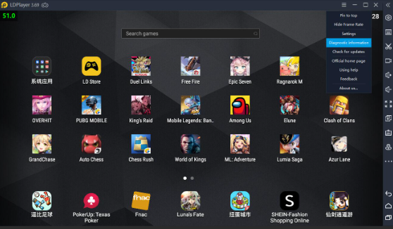
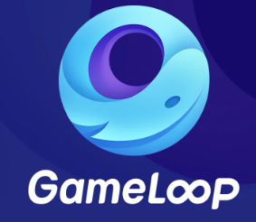
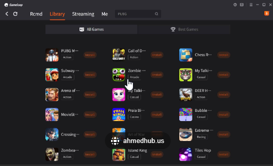
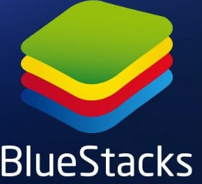
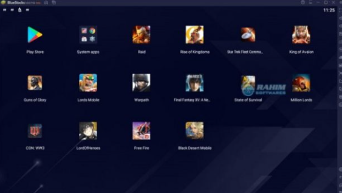
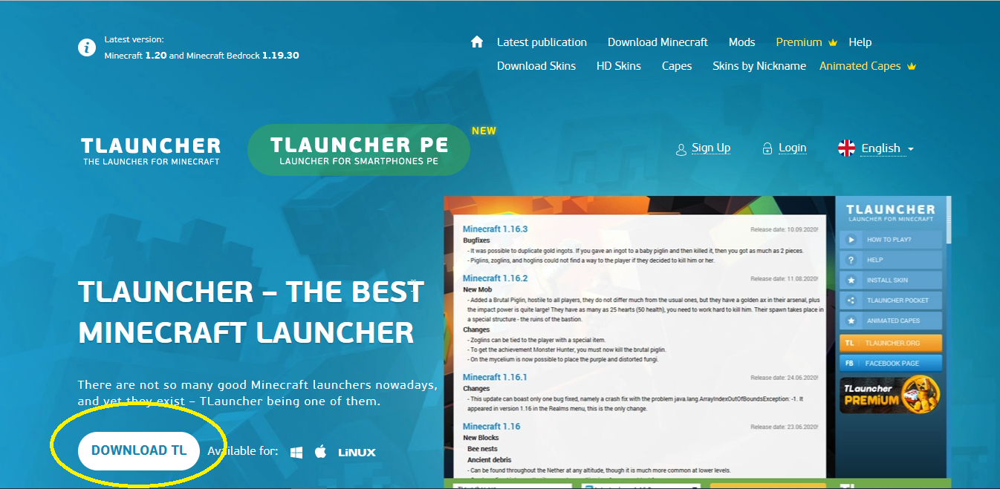
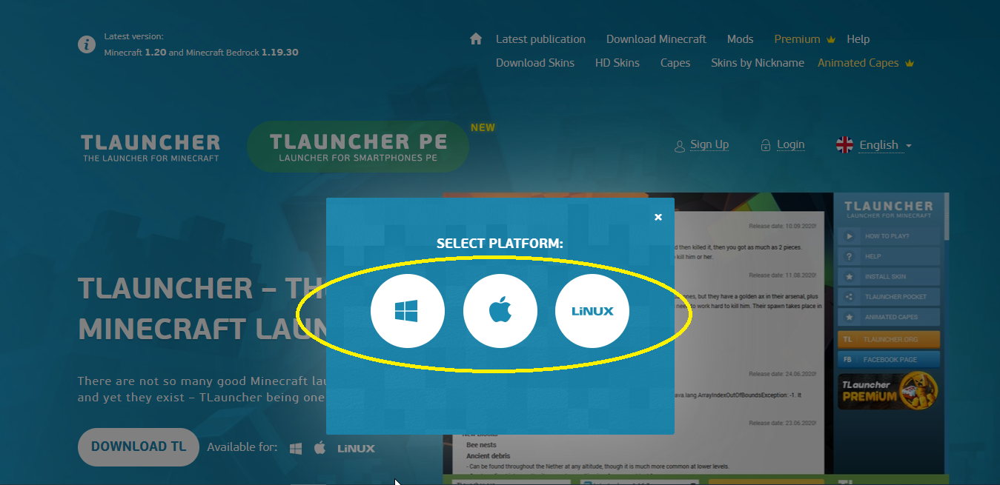

cette question se pose par des centaines de personnes est ce que on peut jouer à des jeux totalement gratuitement sur pc et la réponse et oui on peut et tous ça grace à des émulateurs de jeux ici on va vous ptésenter leur top 3 des meilleures émulateurs de jeux
tout d'abord c'est qoui un émulateur de jeux?
un émulateur de jeux est tout simplement un logiciel qui permet de d'installer des jeux et des application sur ordinateur voici le top 3
LDPlayer est un émulateur Android pour Windows axé sur les jeux vidéo et destiné aux joueurs. Il est vrai que vous pouvez lancer n'importe quel type d'application Android à partir de celui-ci, mais il est essentiellement conçu pour le jeu.
voici le logo:
et voici l'interface
voici le lien de télécharger:
lien de téléchargement de LD PLAYERGameLoop est un émulateur de jeux vidéos développé par l'entreprise chinoise Tencent, qui s'appelait autrefois Tencent Gaming Buddy. Il s'agit en somme d'un logiciel qui permet de simuler numériquement les conditions d'un support physique, comme une console ou un smartphone, sur un ordinateur. En passant par GameLoop, vous allez pouvoir jouer à des jeux Android, normalement réservés aux mobiles, sur votre PC ou votre Mac.
voici le logo:
et voici son interface:
voici lien de téléchargement
 lien de téléchargement de GAME LOOPet pour le dernier émulateur et qui considérer comme le meilleure de tous est BLUESTACKS
BlueStacks est une plate-forme PC. Étant donné que vous utilisez un téléphone, qui vas vous rediriger vers la page Google Play.
voici son logo
et voici son interface
voici le lien de téléchargement
lien de téléchargemrnt de BLUESTACKSminecraft est un jeu video créer par mojang studio de type aventure qui consiste à l'exploration et d'agrandir l'imagination des joueurs
pour plus d'information clique sur ce lien: plus d'information sur minecraft
et ici on vous vous présenter comment l'installer gratuitement sur pc windows 10 bien sur vous n'aurais pas toute les possiblités de jouer que dans le vrai jeu payant mais c'est mieux que rien non? alors commençon
tout d'abord vous devez télécharger TLAUNCHER voici le lien: télécharger TLAUNCHER
cliquez ici
puis vous allez choisir votre platforme
puis vous devez télécharger java voici le lien: télécharger java